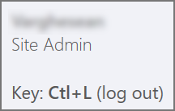
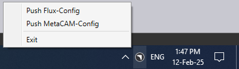

Inštalácia servera
Postupujte podľa pokynov pre inštaláciu TruSmartCAM servera spolu s SQL.
|
Administrátorské práva
Na vykonanie tejto inštalácie musí mať používateľ administrátorské oprávnenia. |
-
Spustite Setup.TruSmartCAM.<version>.exe pre začatie inštalácie.
| Version je číslo. |
-
Prečítajte si licenčnú zmluvu a vyberte I accept the agreement a potom kliknite na Nasl. .

Krok 1 : Umiestnenie inštalácie
-
Zadajte inštalačný adresár alebo akceptujte predvolené umiestnenie inštalácie
C:\Program Files\Metamation\Praxisa kliknite na Nasl..-
C:\Program Files\Metamation\Praxis- Inštalačný priečinok bude obsahovať nasledujúce priečinky : Bin, MetaCAM, Samples a Tracker. -
C:\Program Data\Metamation- Dátový priečinok bude obsahovať nasledujúce priečinky : TruSmartCAM, TecZone a MetaCAM.
-

Krok 2 : Výber komponentov
| Typ inštalácie | Komponenty |
|---|---|
Full |
Server + Desktop client + Engine |
Client |
Desktop Client |
Server |
Server + Desktop client |
Station |
Vyberie všetky terminálové stanice ako TecZone, MetaCAM, RightAngle(Bend Controller), Vulcan(Laser Machine Controller) |
Custom |
Vyberá používateľ. |
-
Vyberte Full Installation. Vyberte Code Senders a Bend Code Senders z TruSmartCAM Tools. Teraz sa typ inštalácie zmení na Vlastné. Kliknite na Nasl..

Krok 3 : Výber inštalácie SQL Server
|
Inštalácia SQL Express 2022 je potrebná iba pre TruSmartCAM server. Táto možnosť nie je dostupná pre inštalácie Client a Sync. Táto možnosť je tiež zaškrtnutá a nainštalovaná prvýkrát a následne ju možno ignorovať. Ak je už SQL nainštalovaný na TruSmartCAM serveri, používateľ môže ignorovať krok 3. |
-
V Select Additional Tasks : Kliknite na Install SQL Express a kliknite na Nasl..
-
V Ready to Install : Zhrňte všetky funkcie inštalácie a kliknite na Install.

Krok 4 : Inštalácia SQL Server
Po nainštalovaní komponentov TruSmartCAM inštalátor pokračuje s inštaláciou SQL servera. Akceptujte licenčnú zmluvu pre pokračovanie a nainštalujte SQL express s predvolenými možnosťami.

Po dokončení inštalácie kliknite na Close a dokončite inštaláciu.

| V závislosti od verzie Windows môže zatvorenie inštalácie SQL vyžadovať reštart. |
Krok 5 : Zástupcovia na ploche Windows
-
Po inštalácii SQL, ak sa systém nereštartuje, vyberte políčko Launch TruSmartCAM a kliknite na Finish.
-
Ak sa systém reštartuje, potom spustite ikonu zástupcu TruSmartCAM na ploche alebo zadajte TruSmartCAM v štarte Windows a spustite ako správca.
| Inštalácia servera : Ikony zástupcov TruSmartCAM a TruSmartCAM License sú dostupné na ploche. + Inštalácia Client/SYNC : Iba ikona zástupcu TruSmartCAM je dostupná na ploche. |

Krok 6 : Registrácia licencie
-
Do poľa Serial Number zadajte TruSmartCAM Serial key poskytnutý tímom Trumpf Metamation Service. Zadajte <Company Name> do poľa "Registered to" a E-Mail. Kliknite na OK.

|
V prípade, že sieťový firewall blokuje registráciu licencie alebo nie je internet na PC servera TruSmartCAM, potom sa licencia TruSmartCAM vykoná offline aktiváciou. Pošlite e-mailom súbor Prax.request z priečinka C:\ProgramData\Metamation\Praxis tímu Trumpf Metamation Service. Tím Trumpf Metamation poskytne súbor Prax.lock, ktorý je potrebné presunúť do tohto priečinka. |
Krok 7 : Počiatočná jednorazová konfigurácia
-
Zadajte názov databázy a nastavte umiestnenie úložiska dát. Vyberte políčko Použite SQL Server a vyberte názov SQL servera na pripojenie k databáze. Kliknite na OK.

-
Desktop klient TruSmartCAM sa otvorí a zobrazí Database Connection Succeeded v dolnej časti.
-
Konfiguračné súbory TruSmartCAM, TecZone a MetaCAM boli vytvorené s predvolenými konfiguračnými strojmi alebo podľa licenčných strojov TruSmartCAM. Tá istá konfigurácia bude zdieľaná vo všetkých klientoch TruSmartCAM.

Privítacia obrazovka zobrazuje Windows používateľské LoginName ako TruSmartCAM Login a Name. Prvý používateľ TruSmartCAM je považovaný za Stránka admin. Zadajte Email a heslo. Kliknite na OK .
Vyberte políčko Zapamätaj si ma na uloženie prihlasovacích údajov na budúce použitie. Zrušenie zaškrtnutia políčka Zapamätaj si ma vyvolá dialóg pre prihlásenie a heslo pri každom spustení aplikácie TruSmartCAM.

Krok 8 : Prihlásenie do TruSmartCAM
-
Zatvorte TruSmartCAM a znovu ho otvorte. Systém vás vyzve na zadanie prihlasovacích údajov TruSmartCAM.

-
Prihláseného používateľa zobrazené vedľa ikony používateľa v hlavičke aplikácie TruSmartCAM.

-
Keď ukážete na ikonu používateľa, systém zobrazí:

-
Rolu používateľa (napríklad: Programmer, Admin).
-
Skratku na odhlásenie: Ctrl+L.
-
-
Kliknutím na ikonu používateľa sa otvorí ponuka, ktorá vám umožní:

-
Upraviť informáciu… - Aktualizovať detaily profilu.
-
Zmeniť heslo… - Zmeniť heslo účtu.
-
Odhlásiť - Odhlásiť sa z aplikácie.
-
Zrušiť - Zatvoriť ponuku bez vykonania zmien.
-
Krok 9 : Konfigurácia strojov továrne
-
Licencia TruSmartCAM [Všetky stroje povoľujú licenčný bit] : Predvolené stroje TruSmartCAM a materiál sú považované za konfiguráciu továrne.
-
Licencia TruSmartCAM [Žiadne demo a niekoľko bitov strojov povolených] : Tieto niekoľko strojov a predvolený materiál sú považované za konfiguráciu továrne.
-
(Open → Import) novú časť z
C:\Program Files\Metamation\Praxis\Samples\Partsa overte, či je časť úspešne importovaná.

Poznámka 1 : TruSmartCAM Monitor
-
TruSmartCAM Monitor s inštaláciou Engine (práva site admin):
-
TruSmartCAM Monitor s Engine spolu s oprávneniami Site Admin TruSmartCAM bude mať nasledujúce možnosti:
-
Push konfigurácie TruSmartCAM, TecZone, MetaCAM naprieč všetkými klientmi TruSmartCAM. Má tiež práva na vytvorenie nového prihlásenia používateľa TruSmartCAM.
-
Show Agents zobrazí celkový počet dostupných engine na vykonávanie automatizačných úloh, ktoré sú v súlade s licenciou TruSmartCAM.
-
-

-
TruSmartCAM Monitor bez inštalácie Engine (práva site admin):

-
TruSmartCAM Monitor bez inštalácie Engine (práva bez site admin):

|
PC, na ktorom beží aplikácia TruSmartCAM, musí mať nainštalovaný komponent Engine TruSmartCAM [Server PC alebo v ľubovoľnej inštalácii klienta]. PC s nainštalovaným komponentom Engine TruSmartCAM by mal bežať 24x7 na vykonávanie všetkých automatizačných úloh. |
Poznámka 2 : Lock Tracker
-
Kliknite na zástupcu TruSmartCAM License dostupný na ploche TruSmartCAM servera. Alternatívne otvorte url http://localhost:7171/metamation/locktrack v ľubovoľnom webovom prehliadači.
Otvorí sa modul Lock Tracker, ktorý obsahuje informácie o licencii, TruSmartCAM informácie o aktuálnej relácii a Log.
LockTracker HOME Page : Zobrazuje TruSmartCAM sériové číslo, informácie o vypršaní sériového čísla a informácie o dostupných sériových bitoch.

LockTracker SESSIONS Page : Aktuálne informácie o pripojení servera TruSmartCAM ako PC klienta TruSmartCAM Desktop, PMonitor, PEngine Status.

LockTracker LOGs Page : Štart a odhlásenie klienta TruSmartCAM | štart Pmonitor a stav pripojenia/odpojenia PEngine atď. možno zobraziť na tejto stránke Logs.

Poznámka 3 : OpenGL
-
Aplikácia TruSmartCAM pri otváraní, ktorá sa okamžite zatvorí a pmonitor sa tiež nezobrazí na paneli úloh.
-
Toto predstavuje problém s OpenGL.
-
Ďalší spôsob, ako to potvrdiť: Otvorte C:\Program Files\Metamation\Praxis\Bin\Flux.exe, ktorý zobrazí dialóg s chybou týkajúcou sa problému s OpenGL.

-
Aktualizujte C:\ProgramData\Metamation\Praxis\Prax.ini, sekciu options s GLVersion=1 a aplikácia TruSmartCAM sa úspešne otvorí.
[Options]
GLVersion=1.0